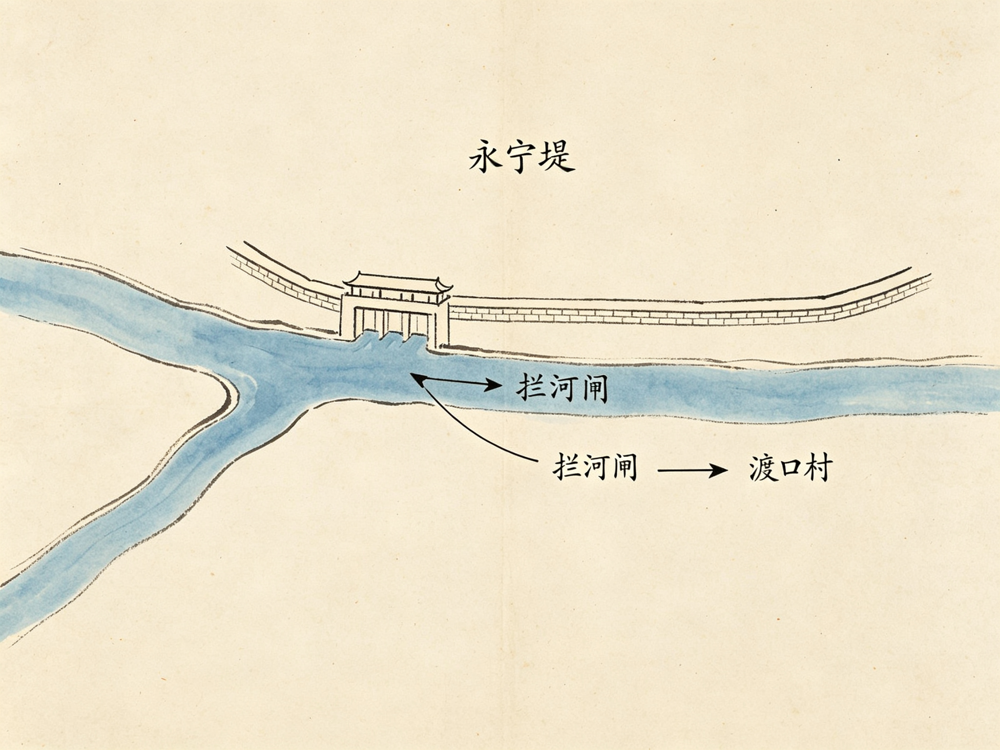
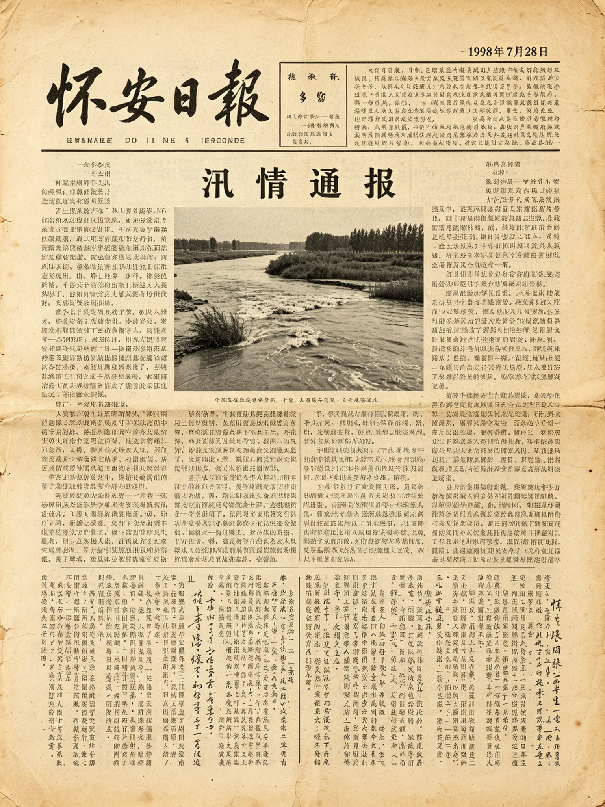
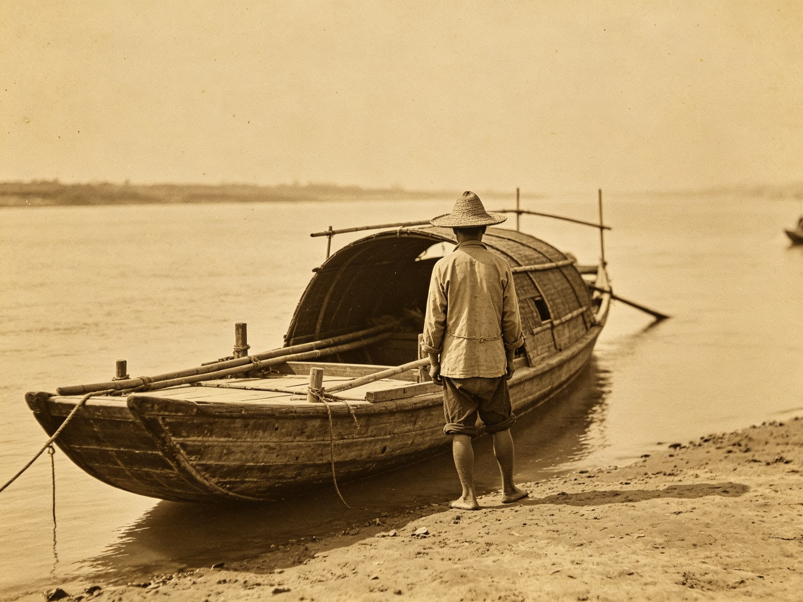

永宁堤新一轮护坡整治开工，预计年底完工
县水务局启动永宁堤护坡整治工程，重点处理弯道段堤脚冲刷与管涌隐患。工程负责人表示，该段历来是防汛重点防守段。
2026-06-18 09:20 · 记者 本报记者 · 阅读 1.2 万
要闻速览
- 永宁堤位于怀水河弯道内侧，全长 4.2 公里，守护永宁镇三万余居民水利 · 堤防06-18
- 1998 年汛情通报（旧报数字化·影印件）旧报 · 1998-07-2807-28
- 县方志馆旧照数字化上线，首批 1400 张开放检索影像05-09
- 渡口村摆渡史入选县级非遗名录文化11-03
水利 · 堤防
-
永宁堤位于怀水河弯道内侧，全长 4.2 公里，守护永宁镇三万余居民，始建于明代。1976 年全线加高加固，设计防洪标准为二十年一遇。2026-06-18 · 本地
-

旧报影印
-

7 月 20 日夜起，我县境内普降暴雨，怀水河水位持续上涨。经全县干部群众奋力抢险，永宁堤险情得到有效控制，未发生重大人员伤亡。1998-07-28 · 旧报 -
 灾后第三年，本报记者再访永宁镇。有家属称，自家亲人至今列在防汛失踪案的名册上，每年汛期都有人去问，得到的答复只有一句“洪水退去之后再说”。此后本报未再刊发后续报道。2001-07-21 · 旧报
灾后第三年，本报记者再访永宁镇。有家属称，自家亲人至今列在防汛失踪案的名册上，每年汛期都有人去问，得到的答复只有一句“洪水退去之后再说”。此后本报未再刊发后续报道。2001-07-21 · 旧报
影像怀安
-
 本批旧照多来自民间征集，题材涵盖怀安老街、怀安大桥通车、端午祭江等。部分照片背面留有拍摄者手写的日期与地点，成为著录的重要依据。2026-05-09 · 影像
本批旧照多来自民间征集，题材涵盖怀安老街、怀安大桥通车、端午祭江等。部分照片背面留有拍摄者手写的日期与地点，成为著录的重要依据。2026-05-09 · 影像 -
因来源与时间尚待核对，该组影像暂不公开，待核对完成后再行上线。方志馆表示，凡来源、时间存疑的照片，一律按规范标注"待核"，不作删改。2026-05-09 · 影像
地方文化
-
